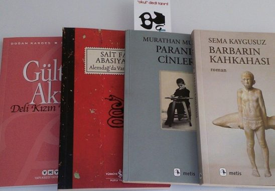

Tüm Eserlerim
Aşağıda yazdığım tüm eserleri görebilirsiniz
- Mahmud ile Yezida(1980)
- Osmanlıya dair Hikâyat (1981)
- “Boyacıköy’de Kanlı Bir Aşk Cinayeti” (1982) (Öykü)
- Taziye (1982)
- Kum Saati (1984)
- Son İstanbul (1985)
- Sahtiyan (1985)
- Cenk Hikâyeleri (1986)
- Kırık Oda (1987)
- Lal Masallar (1989)
- Eski 45'likler (1989)
- Yaz Sinemaları (1989)
- Mırıldandıklarım (1990)
- Yaz Geçer (1992)li>
- Geyikler Lanetler (1992)
- Bir Garip Orhan Veli (1993)
- Oda, Poster ve Şeylerin Kederi (1993)
- Omayra (1993)
- Kaf Dağının Önü(1994)
- Metal (1994)
- Murathan’95 (1996)
- Li Rojhilatê Dilê Min (1996)
- Paranın Cinleri (1997)
- Başkasının Hayatı (1997)
- Dağınık Yatak (1997)
- Dört Kişilik Bahçe(1997)
- Oyunlar İntiharlar Şarkılar (1997)
- Mürekkep Balığı (1997)
- Başkalarının Gecesi (1997)
- Metinler Kitabı (1998)
- Üç Aynalı Kırk Oda (1999)
- Doğduğum Yüzyıla Veda (1999)
- Meskalin (2000)
- Soğuk Büfe (2001)
- Erkekler İçin Divan (2001)
- Yüksek Topuklar (2002)
- 7 Mühür (2002)
- Timsah Sokak Şiirleri (2003)
- Yabancı Hayvanlar (2003)
- Çador (2004)
- 13+1 (2004)
- Bir Kutu Daha (2004)
- Beşpeşe (2004 )
- Eteğimdeki Taşlar (2004)
- Elli Parça (2005)
- Söz Vermiş Şarkılar (2006)
- Kâğıt Taş Kumaş (2007)
- Kullanılmış Biletler (2007)
- Yedi Kapılı Kırk Oda (2007)
- Dağ (2007)
- Kadından Kentler (2008)
- Bazı Yazlar Uzaktan Geçer (2009)
- Hayat Atölyesi (2009)
- Eldivenler Hikayeler (2009)
- İkinci Hayvan (2010)
- Gelecek (2010)
- Kibrit Çöpleri (2011)
- Şairin Romanı (2011)
- Aşkın Cep Defteri (2012)
- Bir Dersim Hikayesi (2012)
- MLi Rojhilate Dile Min / Kalbimin Doğusunda (2012)
- Tuğla (2012)
- Mutfak (2013)
- Kadınlar Arasında (2014)
- Merhaba Asker(2014)